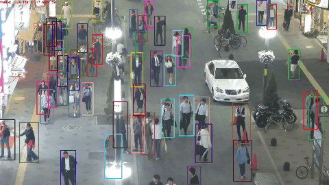
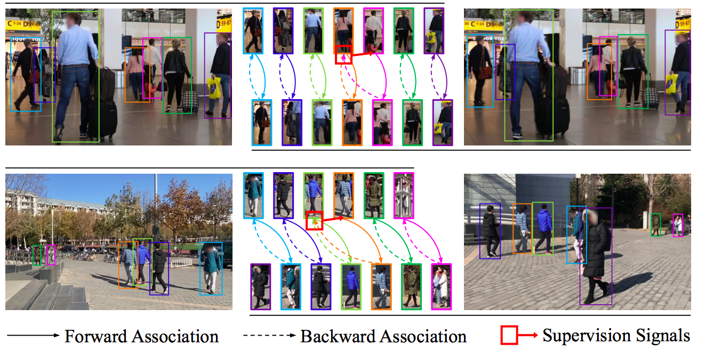
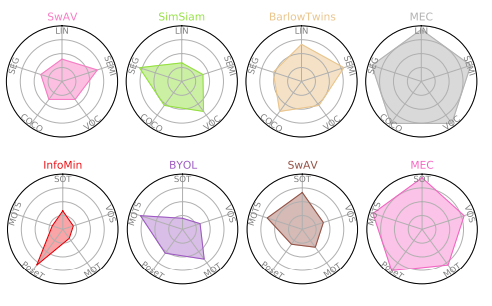

|
Research Interests
In the long term, my research interest lies in developing general embodied intelligent agents (an autonomous driving car can be a simplified example). I have a faith that the emergence of general machine intelligence requires observing, interacting with, and learning from the physical world. In the future, embodied agents may be able to train themselves on the edge, and possibly explore the world in clusters, learning together to form a foundational intelligent model (somewhat like the Sibyl system in the Sci-Fi anime Psycho-Pass, but an enhanced version that can interact with the world). Such a strong intelligent model may looks a little bit evil, but with efforts I believe we can make it used for good purposes :)
In the short term, my research interest lies in perception algorithms for automonous driving. Including but not limited to 2D/3D object detection, segmentation, tracking, 3D reconstruction, and offboard pereception (for auto-labeling). I have several openings for self-motivated reserach interns on these topics, please feel free to drop me an e-mail.
Previously, I did research on representation learning and object tracking. Representative works include JDE and UniTrack for object tracking, the CycAs series [v1,v2,v3] for person re-identification, and Circle Loss, D-Softmax Loss for metric learning.
|
|
Selected Publications
For the latest full list please check here.
Perception (object detection/segmentation/tracking)
|
|

|
Towards Real-time Multi-Object Tracking
Zhongdao Wang,
Liang Zheng,
Yixuan Liu,
Yali Li,
Shengjin Wang
ECCV, 2020
arXiv /
code star
By incorporating the appearance embedding model into the detector, we introduce JDE, the first open-source real-time multiple object trackor with a running speed of 22 ~ 38 FPS. This speed takes all the steps into account, including detection, appearance embedding extraction and association. Code is released! If you are looking for an easy-to-use and fast pedestrian detector/tracker, JDE is a good option!
|
Representation learning / re-identification
|
|

|
[CycAs v1] CycAs: Self-supervised Cycle Association for Learning Re-identifiable Descriptions
[CycAs v2] Generalizable Re-Identification from Videos with Cycle Association
Zhongdao Wang,
Jingwei Zhang,
Liang Zheng,
Yixuan Liu,
Yifan Sun,
Yali Li,
Shengjin Wang
[v1] ECCV, 2020; [v2] arXiv, 2021
CycAs is the fisrt self-supervised method for learning re-identifiable features. We use videos as input, the supervision signal is cycle consistency emerging from instance association in a forward-backward cycle. In CycAs v1, we train and show promising results on (mostly small) canonical datasets; In CycAs v2, we collect a large amount of video data and train a much more generalizable model with improved building blocks. The zero-shot transfer ablility is suprisingly good, with a rank-1 accuracy of 82.2% on Market-1501.
|
|

|
Self-Supervised Learning via Maximum Entropy Coding
Xin Liu,
Zhongdao Wang,
Yali Li,
Shengjin Wang
NeurIPS, 2022 (Spotlight)
Self-supervised learning via Maximum Entropy Coding improves generalization ability of the learned representation on a variaty of down-stream tasks.
|
|
{kind=link}